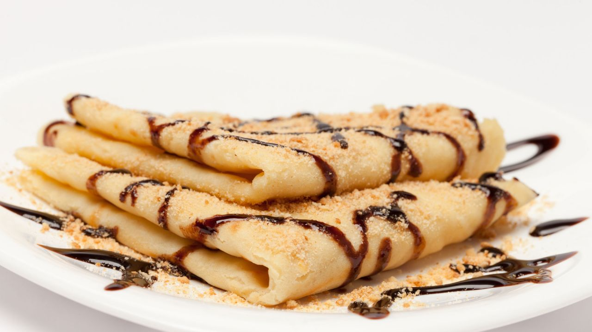
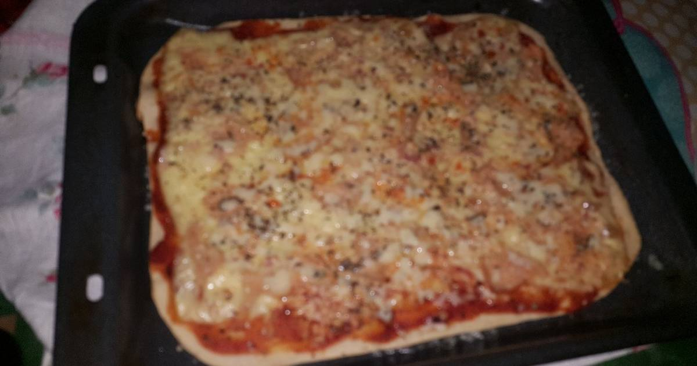

Libro de recetas
Contenido
Crep
Para poder realizar la siguiente receta necesitamos lo siguiente:
| Ingredientes |
Cantidad |
| Harina |
125 gr |
| Huevos |
2 unds. |
| Leche |
250 ml |
| Mantequilla |
50 gr |
| Azucar |
5 gr |
Tenemos la opcion de añadir algo que le acompañe al crep para completar el delicioso postre, por ejemplo, un poco de chocolate.
| Ingredientes |
Cantidad |
| Chocolate |
75 gr |
| Leche |
100 ml |
Funde la mantequilla introduciéndola en el microondas durante 30 0 40 segundos.Pon en un vaso de batidora la leche, la mantequilla fundida y los huevos. Añade la harina, el azúcar y la sal. Tritura todos los ingredientes y pasa la mezcla por un colador para eliminar cualquier grumo que pueda tener.
Unta una sartén antiadherente con una cucharadita de mantequilla con la ayuda de un pincel o brocha. Pon a calentar la sartén a fuego medio.
Vierte un poco de masa y espárcela bien por toda la sartén. Cuando empiece a cuajarse, dale la vuelta y cocina brevemente por el otro lado. Repite la operación hasta terminar toda la masa.
Para preparar la salsa, pon el chocolate troceado y la leche en un cazo. Fúndelo a fuego suave sin dejar de remover.
Sirve los crepes y acompáñalos con la salsa de chocolate.

Pizza 4 quesos
Para elaborar una pizza bien sabrosa necesitamos:
| Ingredientes |
Cantidad |
| Masa de pizza |
400 gr |
| Mozzarella |
250 gr |
| Queso azul |
100 gr |
| Aceite oliva virgen extra |
15 ml |
| Salsa tomate |
150 gr |
| Queso parmesano |
100 gr |
| Queso suave |
50-100 gr |
| Orégano |
3 cucharadas |
Para esta pizza suelo emplear la masa clásica de pizza italiana, aunque podéis darle vuestro toque a la vuestra variando la mezcla de harinas, imaginación al poder para conseguir vuestra pizza preferida.
- Precalentamos nuestro horno a 250º C.
- Espolvoreamos con harina la encimera. Estiramos la masa con el rodillo de manera que quede lo suficientemente fina para que cuando la horneemos quede crujiente.
- Añadimos la salsa de tomate frito casero o tomate natural triturado con una cuchara. Debemos untar toda la superficie dejando los bordes sin tomate, con un pincel o con la misma cuchara, con movimientos circulares.
- Espolvoreamos con el orégano picado.
- Metemos la base de pizza al horno sobre la plancha de metal. Bajamos la temperatura del horno a 200º C.
- Queremos que se fije el tomate y orégano a la base y a la vez conseguir una base crujiente parecida a la de las pizzas profesionales.
- La dejamos sólo 2-3 minutos, sacamos la pizza del horno y volvemos a subir a tope de temperatura (250 º C) para el horneado final.
- Repartimos los quesos elegidos encima de la base que acabamos de sacar del horno.
- Primero espolvoreamos con parmesano rallado. Añadimos los trozos de queso restantes, repartidos de manera estratégica por la superficie.

Lasaña
Otra buena receta es una lasaña, para ello necesitamos:
| Ingredientes |
Cantidad |
| Laminas de lasaña |
12 unds |
| Parmesano rallado |
70 gr |
| Carne picada |
300 gr |
| Vino blanco |
1/2 vaso |
| Tomate entero pelado |
250 gr |
| Zanahoria |
1 und |
| Cebolla |
1 und |
A parte de esto tambien necesitamos mas ingredientes para la salsa bechamel
| Ingredientes |
Cantidad |
| Mantequilla |
50 gr |
| Harina |
50 gr |
| Leche |
1/2 L |
Elaboración
- En una cacerola calienta tres cucharadas de aceite de oliva y añade la zanahoria y la cebolla bien picadas. Cuando la cebolla esté bien dorada añadimos la carne y dejamos que también se dore
- Entonces echamos el vaso de vino y dejamos que se evapore.
- Tras esto, añadimos los tomates cortados y sin pepitas, salpimentamos al gusto y dejamos cocer la salsa durante media hora.
- Mientras se cuece la salsa boloñesa podemos hacer la bechamel. En una sartén derrite la mantequilla y añade la harina. Sin parar de remover en ningún momento ve añadiendo leche caliente hasta que la salsa comience a hervir. Añade la sal, reduce el fuego y cocina durante unos veinte minutos. Tienes que remover para que no se formen grumos. Salpimenta al gusto.
- Pon las láminas de pasta en agua hirviendo con sal y cuando estén al dente, colócalas sobre un trapo (sepáralas para que no se peguen entre ellas).
- Y llegamos a la parte final de la preparación, montar la lasaña. En una fuente para el horno unta la base de mantequilla y cubre la base con una primera capa de pasta. Añade una capa de salsa boloñesa, otra de bechamel, espolvorea con queso rallado, pon un poco de mantequilla y otra capa de pasta. Y así hasta terminar los ingredientes. Puedes corona la lasaña con una capa de carne, bechamel y queso, o con láminas de pasta.
- Introduce la lasaña en el horno y cocínala a 180 grados durante media hora.